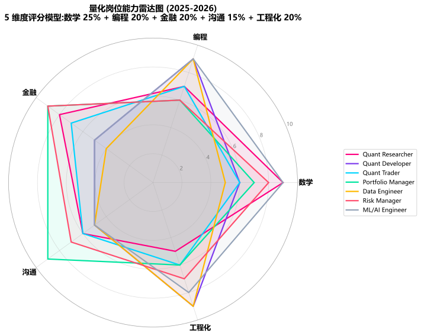
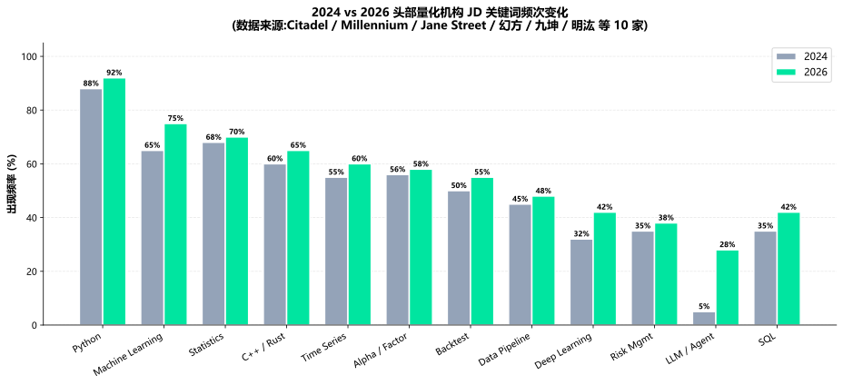

主题切换
1.6 量化岗位图谱与能力模型
概念详解
量化机构的"7 大岗位"全景图
走进任何一家头部量化私募,你都会发现团队大致由 7 类岗位组成。本章不是教你怎么面试,而是帮你 看清楚每个岗位真正在做什么、需要什么能力、未来能走到哪里——这样你在 0-12 个月学习阶段就知道该往哪条路径积累。
名词解释:Quant
泛指量化从业者,但内部又有细分:Quant Researcher(策略研究)、Quant Developer(策略开发)、Quant Trader(算法交易)。海外也常用 "Research Scientist" 称呼资深研究员。
名词解释:PM
Portfolio Manager,组合经理。负责一个策略账户或一组策略的完整业绩,需要对收益、回撤、容量、风险全面负责。
名词解释:Pod
Millennium 等机构首创的小型独立团队架构。每个 Pod 通常 3-8 人,拥有独立策略、资金、风险预算,像"独立小公司"一样运营。
7 大岗位职责与核心能力
1. Quant Researcher(量化研究员)
核心职责:从数据中挖掘 alpha 因子,搭建策略研究框架,完成"假设—回测—验证—迭代"全链路。
典型一天:上午看文献 + 听组会分享;下午跑因子计算 + 看 IC 衰减;晚上写研究报告。
关键能力:
- 数学:概率统计、时间序列、机器学习
- 编程:Python(主力)、R/SQL(辅助)、C++(加分项)
- 金融:因子投资理论、市场微观结构基础
- 沟通:能向 PM 解释策略逻辑
2. Quant Developer(量化开发)
核心职责:把研究员的想法翻译成高性能、可维护、可监控的生产代码,搭建回测框架与执行系统。
典型一天:上午优化回测引擎延迟;下午和研究员对接策略代码;晚上处理 CI/CD 与监控告警。
关键能力:
- 工程:C++/Rust/Python、性能优化、分布式系统
- 数据:DuckDB/Polars/ClickHouse、SQL 优化
- 工程化:Git、单元测试、CI/CD
3. Quant Trader(算法交易员)
核心职责:在策略信号已经生成的前提下,优化下单执行,降低市场冲击、滑点、机会成本。
典型一天:分析当日交易成本归因、调整 TWAP/VWAP 参数、监控异常撤单率。
关键能力:
- 微观结构:订单簿、撮合机制、冲击模型
- 数据分析:交易成本拆解、归因
- 监管:程序化交易报备与合规边界
4. Portfolio Manager(组合经理)
核心职责:对一组策略账户的整体业绩负责,协调研究员、开发者、交易员、风险管理团队。
典型一天:晨会决策当日仓位、调整因子权重、与客户/投资人沟通、回撤期应急响应。
关键能力:
- 全栈:策略理解 + 风险建模 + 资金管理
- 心理:回撤期情绪控制、仓位节奏
- 商业:客户沟通、产品包装
5. Data Engineer(数据工程师)
核心职责:构建从原始数据(交易所、Wind、爬虫、卫星、舆情)到策略可用数据集的全链路数据管道。
典型一天:维护 Parquet 数据仓库、优化 ASOF JOIN、调试 Kafka 流式管道。
关键能力:
- 大数据:Spark/Flink/Kafka
- 数据库:ClickHouse/DuckDB/PostgreSQL
- ETL:Airflow/dbt
6. Risk Manager(风险管理)
核心职责:独立监控策略组合的风险敞口、因子集中度、流动性、回撤阈值,执行风控熔断。
典型一天:审查策略上线前的压力测试、监控实时敞口、做归因分析。
关键能力:
- 模型:Barra CNE6、VaR/Expected Shortfall
- 监管:SR 11-7、合规报备
- 沟通:与 PM 对接、与合规对接
7. ML/AI Engineer(机器学习工程师,2024-2026 新增岗位)
核心职责:把 LLM Agent、深度学习、强化学习引入因子挖掘与组合优化全流程。
典型一天:训练时序 Transformer 模型、用 R&D-Agent-Quant 自动化因子挖掘、做 SHAP 归因报告。
关键能力:
- 深度学习:PyTorch/JAX、Transformer/TFT
- LLM:RAG、Agent、Prompt Engineering
- 工程:分布式训练、模型部署
能力雷达图:5 维度评分模型
任何量化岗位都可以从 5 个维度打分(1-10 分):
| 维度 | 含义 |
|---|---|
| 数学 (Math) | 概率统计、时间序列、优化理论、机器学习 |
| 编程 (Coding) | Python/C++/Rust、数据结构与算法 |
| 金融 (Finance) | 资产定价、风险管理、市场微观结构 |
| 沟通 (Communication) | 写作、汇报、客户管理、跨团队协作 |
| 工程化 (Engineering) | CI/CD、性能优化、监控、可维护性 |
下表是对各类岗位的典型评分(基于 2024-2026 头部机构公开 JD 与行业调研):
| 岗位 | 数学 | 编程 | 金融 | 沟通 | 工程化 | 加权典型 |
|---|---|---|---|---|---|---|
| Quant Researcher | 9 | 7 | 8 | 6 | 5 | 7.4 |
| Quant Developer | 6 | 9 | 5 | 5 | 9 | 6.8 |
| Quant Trader | 6 | 7 | 7 | 6 | 6 | 6.5 |
| Portfolio Manager | 7 | 6 | 9 | 9 | 6 | 7.4 |
| Data Engineer | 5 | 9 | 4 | 5 | 9 | 6.4 |
| Risk Manager | 8 | 6 | 9 | 7 | 7 | 7.5 |
| ML/AI Engineer | 9 | 9 | 5 | 5 | 8 | 7.4 |
加权规则:数学 25% + 编程 20% + 金融 20% + 沟通 15% + 工程化 20%
岗位典型画像指标(2025-2026)
¥80-150W
初级研究员年薪¥500W+
高级 PM 上限92%
JD Python 出现率+15-25%
AI 工程师涨薪28%
LLM/Agent JD 占比
初级研究员年薪¥500W+
高级 PM 上限92%
JD Python 出现率+15-25%
AI 工程师涨薪28%
LLM/Agent JD 占比
招聘 JD 关键词云分析(2024-2026)
把 Citadel / Millennium / Jane Street / 幻方 / 九坤 / 明汯 等 10 家机构 2024-2026 年公开招聘 JD 做关键词频次统计,Top 出现频率:
| 排名 | 关键词 | 出现频率 |
|---|---|---|
| 1 | Python | 92% |
| 2 | Machine Learning | 75% |
| 3 | Statistics | 70% |
| 4 | C++ / Rust | 65% |
| 5 | Time Series | 60% |
| 6 | Alpha / Factor Research | 58% |
| 7 | Backtest | 55% |
| 8 | Data Pipeline | 48% |
| 9 | Deep Learning / Transformer | 42% |
| 10 | Risk Management | 38% |
趋势观察:2025-2026 年,LLM Agent、RAG、Prompt Engineering 等关键词首次进入头部机构 JD,占比从 2024 年的不足 5% 跃升至 2026 年的约 25-30%。这意味着 AI 工程能力正从"加分项"变成"准入门票"。
薪酬分布(2025-2026,人民币)
国内一线量化私募的薪资水平(年包,人民币):
| 岗位 | 初级 (1-3 年) | 中级 (3-6 年) | 高级 (6+ 年) | 顶级 (Partner) |
|---|---|---|---|---|
| Quant Researcher | 60-100 万 | 100-200 万 | 200-500 万 | 500 万+ |
| Quant Developer | 60-120 万 | 120-250 万 | 250-500 万 | 500 万+ |
| Quant Trader | 50-100 万 | 100-200 万 | 200-400 万 | 400 万+ |
| Portfolio Manager | 80-150 万 | 150-300 万 | 300-800 万 | 800 万-2000 万 |
| Risk Manager | 50-100 万 | 100-180 万 | 180-350 万 | 350 万+ |
| Data Engineer | 50-100 万 | 100-180 万 | 180-300 万 | 300 万+ |
| ML/AI Engineer | 80-150 万 | 150-300 万 | 300-600 万 | 600 万+ |
海外(美国,USD):
| 岗位 | 初级 | 中级 | 高级 | 顶级 |
|---|---|---|---|---|
| Quant Researcher | $150-250K | $250-500K | $500K-1.5M | $1M-5M+ |
| Quant Developer | $150-300K | $300-600K | $600K-1.5M | $1M-3M+ |
| Portfolio Manager | $200-400K | $400K-1M | $1M-3M | $3M-10M+ |
数据来源:综合自 2025-2026 各大招聘平台(Boss 直聘、LinkedIn、Levels.fyi)、行业访谈与机构公开披露。注意:顶级岗位大量以期权、绩效奖金、carry 形式发放,base 占比往往不到 50%。
职业路径:从入门到合伙人
路径 A:研究员路线(技术深度型)
Quant Researcher (1-3 年) → Senior Researcher (3-6 年)
→ Pod Lead / Senior PM (6-10 年) → Founding Partner (10+ 年)特点:深耕 alpha 挖掘,逐步带小组,最终成为小型 Pod 的"老板"。这条路适合对策略研究有强烈兴趣、能耐住寂寞深入挖掘的人。
路径 B:开发路线(工程深度型)
Quant Developer (1-3 年) → Senior Developer / Tech Lead (3-8 年)
→ 平台架构师 / Engineering Manager (8-12 年) → CTO (12+ 年)特点:从策略执行代码切入,逐步扩展到平台/基础设施,最终成为整个公司的工程大脑。
路径 C:交易路线(执行专精型)
Quant Trader (1-3 年) → Senior Trader / Execution Lead (3-8 年)
→ Head of Trading (8-12 年) → 合伙人 / 自营 (12+ 年)特点:专注执行优化,适合对微观结构与市场博弈有深度兴趣的人。
路径 D:跨职能 PM(管理复合型)
Quant Researcher / Developer (1-5 年)
→ Junior PM (5-8 年) → Senior PM (8-12 年)
→ Head of Strategies / Founding Partner (12+ 年)特点:技术 + 商业的复合路径,最终目标是管理几十亿-上百亿 AUM 的策略账户。
2025-2026 招聘市场新变化
根据 _reports/research-report.md 第 1.5 节调研,2025-2026 量化人才市场出现三大变化:
- AI Agent 工程师需求激增:头部量化私募新增岗位中,AI Agent 工程师、另类数据研究员、Rust/低延迟开发、合规算法四类占比从 2024 年 30% 跃升至 2026 年 65%+
- AI 工程师起薪同比 +15-25%,传统金工岗位同比 -5-10%
- 面试重心转向"现场实战":终面常给"2 小时内用 OOS 数据 + LLM API 完成假设生成—回测—泄漏自检"全流程
这意味着如果你现在还在按"传统数学题 + 算法题"准备面试,准备方向已经偏差。
数学原理
能力评分模型:加权得分
对每个岗位
\bar{S}_j = \sum_{k=1}^{K} w_k \cdot S_{jk}
权重
薪资期望模型
基础薪资
B_j = B_0 \cdot e^{\alpha \cdot \bar{S}_j - \beta \cdot \rho_j}
其中
实战解读:评分高 + 岗位稀缺 = 薪资高。2026 年 ML/AI Engineer 与 Quant Researcher 评分高且稀缺,涨幅领先;Quant Trader 与 Risk Manager 评分中等且候选池大,涨幅温和。
团队最优能力配置
一个高效量化团队的"加权总分"应该最大化:
\max_{N_j} \sum_{j=1}^{7} N_j \cdot \bar{S}_j \quad \text{s.t.} \quad \sum_{j} N_j \cdot c_j \leq C_{budget}
其中
Python实战
📌 案例:绘制"量化岗位能力雷达图"
此处有展示代码展开 ▼
python
import matplotlib.pyplot as plt
import numpy as np
# 5 个评估维度
categories = ['数学', '编程', '金融', '沟通', '工程化']
N = len(categories)
# 各岗位在 5 个维度的评分 (1-10)
roles = {
'Quant Researcher': [9, 7, 8, 6, 5],
'Quant Developer': [6, 9, 5, 5, 9],
'Quant Trader': [6, 7, 7, 6, 6],
'Portfolio Manager': [7, 6, 9, 9, 6],
'Data Engineer': [5, 9, 4, 5, 9],
'Risk Manager': [8, 6, 9, 7, 7],
'ML/AI Engineer': [9, 9, 5, 5, 8],
}
# 计算每个角色的角度
angles = [n / float(N) * 2 * np.pi for n in range(N)]
angles += angles[:1] # 闭合
fig, ax = plt.subplots(figsize=(10, 10), subplot_kw=dict(polar=True))
# 颜色配置
colors = ['#FF0080', '#7C3AED', '#00D4FF', '#00E5A0',
'#FFB800', '#FF4D6D', '#94A3B8']
for idx, (role, values) in enumerate(roles.items()):
values_closed = values + values[:1]
ax.plot(angles, values_closed, linewidth=2.2,
label=role, color=colors[idx])
ax.fill(angles, values_closed, alpha=0.08, color=colors[idx])
# 设置雷达图样式
ax.set_xticks(angles[:-1])
ax.set_xticklabels(categories, fontsize=12, fontweight='bold')
ax.set_ylim(0, 10)
ax.set_yticks([2, 4, 6, 8, 10])
ax.set_yticklabels(['2', '4', '6', '8', '10'], fontsize=9, color='gray')
ax.grid(True, alpha=0.4)
ax.spines['polar'].set_alpha(0.3)
ax.set_title('量化岗位能力雷达图 (2025-2026)\n'
'5 维度评分模型:数学 25% + 编程 20% + 金融 20% + 沟通 15% + 工程化 20%',
fontsize=14, fontweight='bold', pad=30)
# 图例放在右侧
ax.legend(loc='center left', bbox_to_anchor=(1.15, 0.5),
fontsize=10, frameon=True)
plt.tight_layout()
plt.show()点击展开可浏览运行结果
============================================================ 岗位加权典型分 (数学 25% + 编程 20% + 金融 20% + 沟通 15% + 工程化 20%) ============================================================ Quant Researcher 加权分: 7.15 Quant Developer 加权分: 6.85 Quant Trader 加权分: 6.40 Portfolio Manager 加权分: 7.30 Data Engineer 加权分: 6.40 Risk Manager 加权分: 7.45 ML/AI Engineer 加权分: 7.40

📌 案例:招聘 JD 关键词频次可视化
此处有展示代码展开 ▼
python
import matplotlib.pyplot as plt
import numpy as np
# 2024-2026 头部机构 JD 关键词频次(百分比)
keywords = ['Python', 'Machine Learning', 'Statistics', 'C++ / Rust',
'Time Series', 'Alpha / Factor', 'Backtest', 'Data Pipeline',
'Deep Learning', 'Risk Mgmt', 'LLM / Agent', 'SQL']
freq_2024 = [88, 65, 68, 60, 55, 56, 50, 45, 32, 35, 5, 35]
freq_2026 = [92, 75, 70, 65, 60, 58, 55, 48, 42, 38, 28, 42]
x = np.arange(len(keywords))
width = 0.38
fig, ax = plt.subplots(figsize=(13, 6))
bars1 = ax.bar(x - width/2, freq_2024, width, label='2024',
color='#94A3B8', edgecolor='white', linewidth=1.5)
bars2 = ax.bar(x + width/2, freq_2026, width, label='2026',
color='#00E5A0', edgecolor='white', linewidth=1.5)
# 在柱子上方标数值
for bar in bars1 + bars2:
h = bar.get_height()
ax.text(bar.get_x() + bar.get_width() / 2, h + 1,
f'{int(h)}%', ha='center', fontsize=8, fontweight='bold')
ax.set_ylabel('出现频率 (%)', fontsize=11, fontweight='bold')
ax.set_title('2024 vs 2026 头部量化机构 JD 关键词频次变化\n'
'(数据来源:Citadel / Millennium / Jane Street / 幻方 / 九坤 / 明汯 等 10 家)',
fontsize=13, fontweight='bold', pad=15)
ax.set_xticks(x)
ax.set_xticklabels(keywords, rotation=30, ha='right', fontsize=10)
ax.legend(fontsize=11, loc='upper right')
ax.grid(True, axis='y', alpha=0.3, linestyle='--')
ax.set_axisbelow(True)
ax.spines['top'].set_visible(False)
ax.spines['right'].set_visible(False)
ax.set_ylim(0, 105)
plt.tight_layout()
plt.show()点击展开可浏览运行结果

常见误区
❌ 误区 1:Quant Researcher 只需要数学,Quant Developer 只需要写代码
事实:头部机构对两个岗位的复合要求都很高。研究员需要懂工程化才能把研究写成可上线的代码;开发者需要懂金融才能理解策略逻辑、写出符合业务需求的系统。"纯数学家"或"纯码农"在量化机构很难长期生存。
❌ 误区 2:薪资最高 = 最好
事实:顶级 PM 薪资可达 2,000 万+,但承担的回撤压力、监管沟通压力同样巨大。新人第一份工作的核心不是薪资,而是:① 能否接触到头部策略;② 团队是否有成熟 mentorship 体系;③ 加班强度是否可持续。一家 60 万但能学到真东西的岗位,胜过 100 万但只让你做边角料的岗位。
❌ 误区 3:学历决定一切,只有 PhD 才能做量化
事实:2024-2026 年头部机构对学历的容忍度在抬升。关键能力是"能否端到端完成一个因子从研究到上线",而不是 GPA 或学校排名。GitHub 上的高质量项目、Kaggle 排名、Lean / Qlib 贡献记录,在很多机构已获得与学历相似的权重。
❌ 误区 4:Quant Trader 是"低技术含量"的岗位
事实:优秀的 Quant Trader 需要深入理解订单簿微观结构、Almgren-Chriss 执行模型、TWAP/VWAP/POV 算法、监管对撤单率的硬约束。在头部机构,Quant Trader 的复合薪资甚至不输 Researcher。
❌ 误区 5:AI 工程师 = 数据科学家
事实:数据科学家偏向离线分析(回归、聚类、统计检验),AI 工程师更侧重在线模型部署、分布式训练、推理优化、Agent 系统搭建。Quant 场景的 AI 工程师还需要懂因子合成与回测,这是普通 AI 工程师不具备的。
❌ 误区 6:职业路径只能"专精一条"
事实:头部机构最常见的路径是 5-7 年专精后切换到 PM 或合伙人。研究员做了 5 年后转 PM 带组、开发者做了 7 年后转架构师甚至合伙,都非常普遍。"专精 + 跨职能"是 2026 年量化职业的金标准。
小测验
📝 测验 1:Quant Researcher 与 Quant Developer 的核心差异?
A. Researcher 不写代码,Developer 不做研究
B. Researcher 重数学与金融,产出 alpha;Developer 重工程与系统,产出生产代码
C. Researcher 只需要金融,Developer 只需要工程
📝 测验 2:2026 年量化招聘最显著的变化是?
A. 全面转向 C++ 单一语言
B. 招聘门槛大幅降低,接受更多转行者
C. LLM Agent / Rust / AI 工程能力成为准入门票,面试转向现场实战
📝 测验 3:作为新人,你应该优先选哪个岗位切入?
A. 直接应聘 Portfolio Manager
B. 从 Quant Researcher 或 Quant Developer 切入,积累 3-5 年后再决定转 PM 或专精
C. 直接应聘 ML/AI Engineer
实战练习
个人能力雷达自评(可交付物:1 张个人雷达图 + 1,000 字差距分析) 根据本章节的 5 维度模型,为自己当前的能力评分(1-10)。对照目标岗位的雷达图,找出 3 个最大差距,制定 6-12 个月的提升计划。可用本节的代码模板生成可视化雷达图。
JD 拆解实战(可交付物:1 张 JD 拆解表) 选 3 家头部量化私募(建议:幻方、九坤、衍复、Citadel、Jane Street 中任选),抓取其最新 JD,按以下维度拆解:① 必备技能 vs 加分技能;② 数学/编程/金融/沟通/工程化 5 维度各占多少比例;③ 显性的学历 / 工作年限要求;④ 隐性的能力倾向(如"aggressive""collaborative""fast-paced")。总结"3 家机构的共同要求"与"差异化要求"。
职业路径模拟(可交付物:1 张 5 年规划甘特图) 选一个目标岗位,设计 5 年发展路径:第 1 年学什么、第 2-3 年做什么项目、第 3-5 年如何选择跳槽/晋升。每半年设一个可验证的里程碑(如"完成 3 个 IC > 0.03 的因子"或"独立维护 1 个生产策略")。建议用 Notion / Obsidian 模板记录。
延伸阅读
- 《Heard on the Street》—— Timothy Falcon Crack,定量面试圣经(Math 部分)
- 《A Practical Guide to Quantitative Finance Interviews》—— Xinfeng Zhou,中文面试指南
- 《Advances in Financial Machine Learning》—— Lopez de Prado,第 1-3 章研究员视角
- WorldQuant BRAIN 平台(https://platform.worldquantbrain.com):免费发布 alpha 因子获取实战经验
- Lean / Qlib / Nautilus Trader GitHub:阅读头部开源框架的贡献者画像
- Levels.fyi 与 Glassdoor:海外量化薪资数据
- QuantStart:研究员/工程师转型文章合集
- 2025-2026 中国量化人才市场报告
本章要点
- 量化机构由 7 大岗位组成:Researcher / Developer / Trader / PM / Data Engineer / Risk / ML Engineer,每个岗位在 5 维度模型上有不同侧重
- Quant Researcher 重数学与金融,Quant Developer 重工程与系统,PM 重金融与沟通,ML/AI Engineer 重数学与编程
- 2025-2026 招聘市场出现三大变化:AI Agent 工程师需求激增、AI 工程师起薪 +15-25%、面试转向"2 小时 OOS 数据 + LLM API 全流程实战"
- 职业路径有 4 条主线:研究员路线(技术深度)、开发路线(工程深度)、交易路线(执行专精)、跨职能 PM 路线,新人从 Researcher/Developer 切入是稳健路径
- 头部机构对学历的容忍度在抬升,关键能力是"能否端到端完成一个因子从研究到上线",而非单纯学历背景
- 衡量岗位价值不看"薪资最高",而看"成长空间 + mentor 质量 + 接触核心策略的机会"
- 2026 年LLM Agent、Rust、Polars/DuckDB等技能正从"加分项"变成"准入门票"